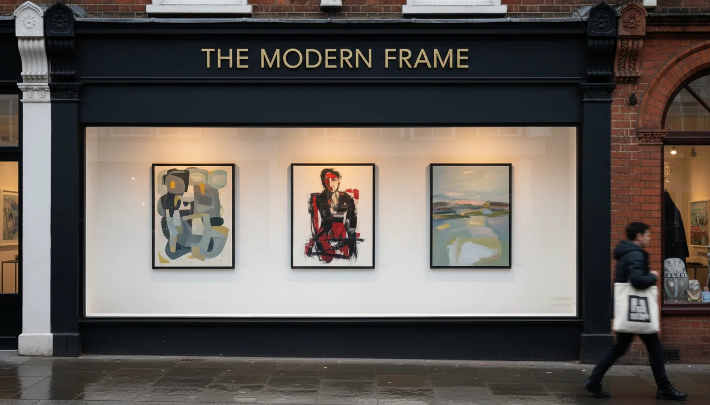

אמנות בלונדון - שלושה מקומות שאני חוזרת אליהם
שלושה מקומות, שלוש סיבות
אם יש לכם דירה בלונדון - או שאתם חושבים על אחת - אמנות בלונדון היא לא הדבר שחושבים עליו ראשון. אבל היא חלק מהבית שאתם בונים שם.
אחרי יותר מעשרים שנה של חיפוש אמנות בלונדון - ללקוחות, לסטודיו, ולבית שלי - יש שלושה מקומות שאני חוזרת אליהם.
Catto Gallery בהמפסטד. Affordable Art Fair ב- Battersea ובהמפסטד. ו- Frieze London בריג׳נטס פארק.
כל אחד עושה משהו אחר. ואת שלושתם יחד, אני בונה מהם את השנה שלי.
Catto Gallery - הגלריה שאני פשוט נכנסת אליה

Catto יושבת על Heath Street בהמפסטד מאז 1986. Gillian Catto פתחה אותה, ומאז 2009 Iain Barratt ו- Imogen Green מנהלים אותה. יותר משישים אמנים בינלאומיים, רובם באמצע הקריירה, מתחלפים ברוטציה לאורך השנה.
זה לא מקום שבאים אליו בשביל אירוע. זה מקום שנכנסים אליו ביום שבת כשעברתם במקרה בהמפסטד, הסתכלתם חמש דקות, ויצאתם. לפעמים עם משהו. לפעמים בלי.
אין לחץ, אין קופצים עליכם ברגע שפתחתם את הדלת, ואין מחירון שמבייש את מי ששאל. הרבה מהיצירות מתחת ל-£1,000. יש גם יקרות יותר, אבל Catto היא גלריה שבה אפשר לבנות אוסף של דירה, לא של מוזיאון.
ללקוחות שלי שקנו דירה ראשונה בצפון לונדון, זה המקום שאני מוציאה אותם אליו עוד לפני שהשיפוץ נגמר. לא כדי לקנות. כדי להתחיל להסתכל. המפסטד וסנט ג׳ונס ווד הן שכונות שקל להסתובב בהן בין גלריות, ו-Catto היא נקודת התחלה טובה.
Affordable Art Fair - ה- private view הוא הקרב האמיתי
שלוש פעמים בשנה היריד הזה מגיע ללונדון. פעמיים ב- Battersea Park, אביב וסתיו. ופעם אחת בהמפסטד, בקיץ.
מעל מאה גלריות בכל יריד. מעל אלף אמנים חיים. מחירים שנעים בין £100 ל-£6,000.
ועכשיו הסוד שהבריטים יודעים ורוב הישראלים לא: היריד מתחיל ערב אחד לפני הפתיחה לקהל. זה ה- private view. אין דחיפות, יש יין בכוס פלסטיק ואור נכון, והגלריסטים פנויים לדבר איתכם באמת. זה היריד האמיתי.
מה שאני עושה: מגיעה ל- private view עם מחברת. עוברת בין הסטנדים. מסמנת שלוש או ארבע אפשרויות לכל לקוח שיש לי בראש. לפעמים משהו גם לעצמי. אחרי יום או יומיים אני חוזרת עם הלקוח או עם חברה, עם רשימה מוכנה, וסוגרים.
הבריטים מגיעים לקנות אמנות בנחת שהיא כמעט מעליבה. מסתכלים, שותים קפה, חוזרים הביתה לחשוב שבוע, וחוזרים לסגור. ישראלים נוטים לרוץ. תתאפקו. בלי סבב ראשון ברוגע, הקנייה לא תהיה טובה.
ובימי הסוף שבוע היריד ידידותי למשפחות. מי שמגיע עם ילדים גדולים יכול לתת להם לבחור הדפס משלהם. לפעמים זה הציור הראשון שילד שלכם מחזיק בו בעלות. לא משהו שקונים ב- Ikea. ב- Battersea ובהמפסטד יש גם תחנת אריזה בחינם ושירות משלוחים. קונים, אורזים, ומוציאים מהדלת.
Frieze London - השבוע שאני הולכת לראות, לא לקנות
Frieze קם ב-2003, על ידי Matthew Slotover ו- Amanda Sharp, מייסדי המגזין Frieze. פעם בשנה, באוקטובר, אוהל ענק נפרס בריג׳נטס פארק, ואיתו מגיעה אמנות עכשווית מכל העולם.
גלריות משאול, מלאגוס, ממקסיקו סיטי, מלוס אנג׳לס - מביאות את מה שבדרך כלל לא מראים בלונדון. Frieze London מציג רק עבודות שנוצרו אחרי שנת 2000. בסמוך לאוהל הזה יש אוהל שני, Frieze Masters, שמציג כל מה שנעשה לפני 2000 - מעתיקות ועד מודרניזם בריטי.
אני לא הולכת ל- Frieze כדי לקנות. המחירים שם לא בליגה של דירה שנייה. הם בליגה של אוספים מוסדיים. אני הולכת כדי לראות. לדעת מה העולם עושה השנה. לחזור לסטודיו עם עיניים פתוחות.
מה שכן בחינם, ומוכן למשפחות: Frieze Sculpture. שביל פסלים גדולים בפארק, פתוח לכולם, בלי כרטיס. עגלה, פיקניק, וטיול של שעתיים בין יצירות שלפעמים מגיעות מביאנלה ובנציה שבוע לפני. ללונדון עם ילדים, זה אחד הדברים הכי יפים שאפשר לעשות באוקטובר.
איך שלושתם משתלבים בשנה
| יעד | תדירות | מצב רוח |
|---|---|---|
| Catto Gallery | לא מתוכנן, לפי מעבר בהמפסטד | להסתכל, ולפעמים לקנות |
| Affordable Art Fair | שלוש פעמים בשנה, פעמיים לכל יריד | private view לבד, ציבורי עם לקוח |
| Frieze London | שבוע אחד, באוקטובר | לראות, לא לקנות |
ישראלים שמגיעים ללונדון שלוש או ארבע פעמים בשנה יכולים לסדר את הביקורים סביב הקצב הזה. ביקור אחד סביב Frieze באוקטובר. ביקור נוסף באביב לקטלוג של Battersea. ביקור חוזר להמפסטד בקיץ. ככה הדירה שלכם בלונדון מקבלת שנה של אמנות, לא רק סבב קניות אחד.
אמנות בדירה בלונדון - למה זה חשוב
דירה בלונדון בלי אמנות היא דירה שלא סיימו לעצב.
ואני מתכוונת לזה פשוטו כמשמעו. תקרה גבוהה מחכה לציור בגודל נכון. אח עם קרניז ויקטוריאני מבקש משהו שיעבוד מעליו עם הפרופורציה של החדר - ובבית עם period features לונדוניים, אמנות לא רק ממלאת קיר. היא מדברת עם הארכיטקטורה.
 שילוב ישן וחדש בעיצוב פנים - האמנות הלונדונית שישראלים צריכים להכירשילוב ישן וחדש בעיצוב פנים הוא מה שלונדון עושה הכי טוב. מטבחים מודרניים בתוך מעטפת ויקטוריאנית, חדרי רחצה עכשוויים מאחורי דלתות מקוריות - הניגוד הזה הוא בדיוק מה שעושה בית בלונדון מיוחד.
שילוב ישן וחדש בעיצוב פנים - האמנות הלונדונית שישראלים צריכים להכירשילוב ישן וחדש בעיצוב פנים הוא מה שלונדון עושה הכי טוב. מטבחים מודרניים בתוך מעטפת ויקטוריאנית, חדרי רחצה עכשוויים מאחורי דלתות מקוריות - הניגוד הזה הוא בדיוק מה שעושה בית בלונדון מיוחד.
אמנות עכשווית בתוך חלל ויקטוריאני היא הדוגמה הקלאסית של שילוב ישן וחדש - וזו אחת הסיבות שאני אוהבת לקנות אמנות עם לקוחות בזמן שהדירה עצמה מתעצבת, לא אחרי. זה חלק מהתהליך שלי איתם, לא נספח.
אז אם אתם רוצים להבין איך האמנות של לונדון נכנסת לבית שלכם פה - תתחילו מ- Catto. תמשיכו ב- Affordable Art Fair בעונה הקרובה. ותכננו טיסה אחת סביב Frieze באוקטובר.
זה מספיק כדי להתחיל. ואחרי שהתחלתם, קשה להפסיק.
בחירת אמנות היא חלק מהעיצוב, לא אחריו. ככה אני עובדת עם לקוחות.
- שלושה מקומות, שלוש פונקציות - Catto Gallery בהמפסטד לקנייה שוטפת, Affordable Art Fair לסבב עונתי, Frieze London לראות מה העולם עושה
- Catto פועלת מ-1986 על Heath Street. הרבה מהיצירות מתחת ל-£1,000. אפשר להיכנס בלי אירוע ובלי לחץ
- ב- Affordable Art Fair, ה- private view לפני הפתיחה הוא היריד האמיתי. סורקים שם לבד, חוזרים עם לקוח או חברה
- Frieze באוקטובר בריג׳נטס פארק - הולכים לראות, לא לקנות. המחירים בליגה של אוספים מוסדיים
- שלושה או ארבעה ביקורים בלונדון בשנה יכולים להסתדר סביב הקצב הזה - Frieze באוקטובר, Battersea באביב, המפסטד בקיץ